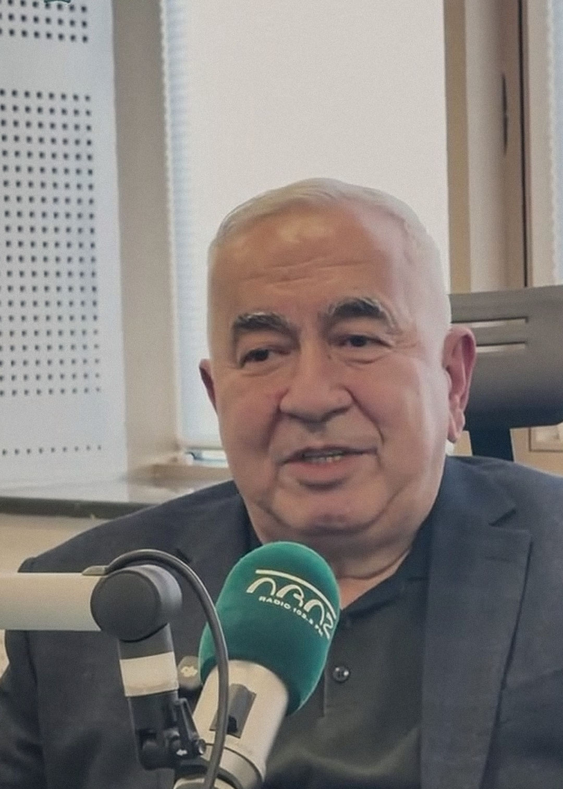
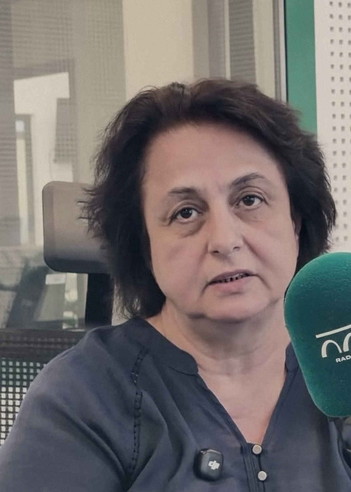

ELŞƏN AĞAYEVİN
REAL FOTOSU
Elşən Ağayev
Anestezioloq-reanimatoloq

SEVDA MƏMMƏDOVANIN
REAL FOTOSU
Sevda Məmmədova
Böyük tibb bacısı
VƏTƏN MÜHARİBƏSİ · 44 GÜN
Zəfərin
görünməyən
qəhrəmanları
Vətən müharibəsində həyat xilas edən həkimlərin xatirələri
QƏBUL VAXTI
ARAZ FM 103.3